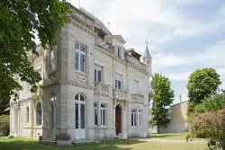
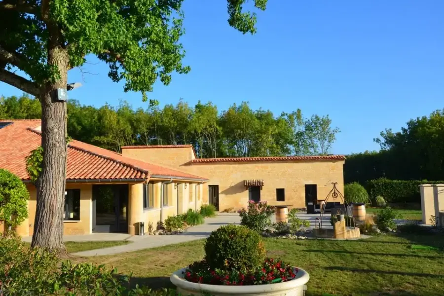
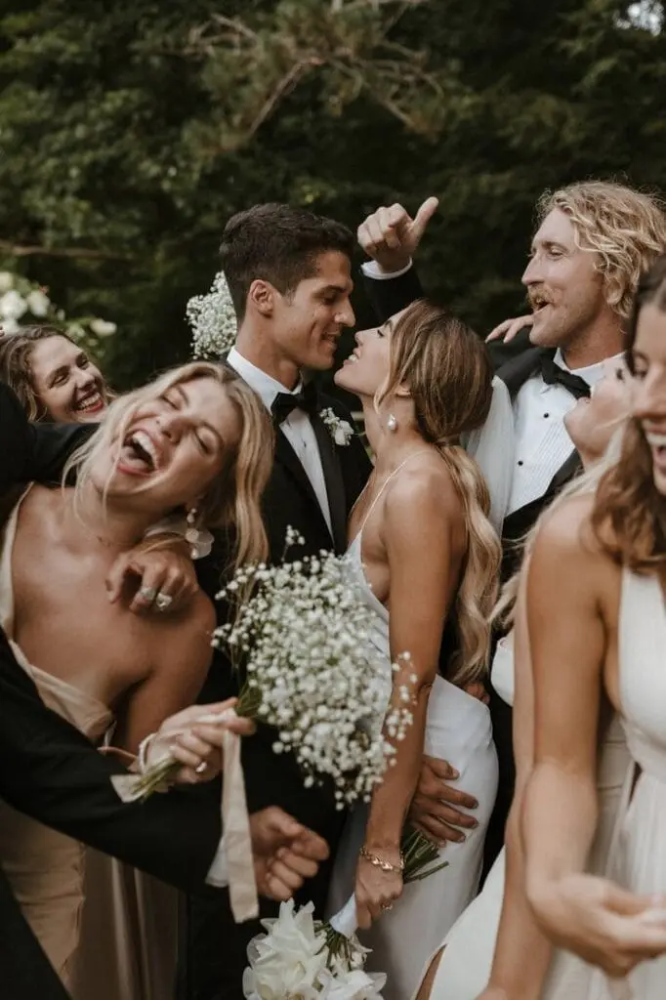

En 2025, une nouvelle tendance émerge dans le monde des mariages : les mariages intimes en petit comité. Ces célébrations, souvent composées de moins de 50 invités, gagnent en popularité pour leur simplicité, leur authenticité et leur personnalisation.
Pourquoi choisir un Mariage Intime ?
Les mariages en petit comité offrent une alternative aux grandes célébrations traditionnelles. Ils permettent aux couples de se concentrer sur l’essentiel : leur amour et leur engagement. Avec un nombre réduit d’invités, chaque moment devient plus significatif et chaque détail peut être soigneusement planifié.
Les Avantages des Mariages en petit comité
- Intimité et authenticité : Partager ce moment spécial avec les personnes les plus proches et les plus chères crée une atmosphère chaleureuse et authentique.
- Personnalisation : Avec moins d'invités, les couples peuvent investir dans des détails personnalisés, comme des cadeaux uniques pour chaque invité ou des menus sur mesure.
- Budget maîtrisé : Réduire le nombre d'invités permet de consacrer plus de budget à des éléments importants comme la photographie, la décoration ou même la lune de miel.
- Flexibilité : Les mariages intimes offrent plus de flexibilité en termes de lieu et de date. Les couples peuvent choisir des endroits uniques et intimes, comme un jardin familial ou une petite chapelle.
Tendances des Mariages intimes en 2025
En 2025, les mariages intimes se distinguent par leur créativité et leur originalité. Voici quelques tendances à surveiller :
- Cérémonies en plein air : Les jardins, les plages et les forêts deviennent des lieux de prédilection pour les mariages intimes, offrant un cadre naturel et enchanteur.
- Décorations écologiques : Les couples optent pour des décorations durables et respectueuses de l’environnement, comme des fleurs locales et des matériaux recyclés.
- Expériences culinaires : Les menus personnalisés et les expériences culinaires uniques, comme des dégustations de vins ou des repas préparés par des chefs renommés, sont très prisés.
- Technologie et streaming : Pour inclure les proches qui ne peuvent pas être présents, les couples utilisent la technologie pour diffuser leur cérémonie en direct.
Planification d'un Mariage Intime
Planifier un mariage intime nécessite une attention particulière aux détails. Voici quelques étapes clés pour vous aider à organiser votre journée spéciale :
- Définir le budget : Établissez un budget réaliste en tenant compte des coûts de la cérémonie, de la réception, de la décoration et des autres dépenses.
- Choisir le lieu : Sélectionnez un lieu dans la région Bordelaise qui correspond à votre vision et à votre style. Les jardins, les plages, les petites chapelles et même les maisons familiales sont des options populaires.
- Créer une liste d’invités : limitez votre liste d’invités aux personnes les plus importantes pour vous. Cela rendra votre mariage plus intime et significatif.
- Personnaliser les détails : investissez dans des éléments personnalisés, comme des invitations faites à la main, des cadeaux pour les invités et des décorations uniques.
- Engager des prestataires : choisissez des prestataires de confiance pour la photographie, la musique, la restauration et la décoration. Assurez-vous qu’ils comprennent votre vision et vos attentes.
- Prévoir des Activités : planifiez des activités pour vos invités, comme des jeux, des discours ou des performances musicales, pour rendre la journée encore plus mémorable.
Inspirations pour un mariage intime
Voici quelques idées pour rendre votre mariage intime unique et inoubliable :
- Décorations thématiques : choisissez un thème qui reflète votre personnalité et vos intérêts, comme un mariage bohème, vintage ou rustique.
- Repas intimiste : optez pour un repas en plein air avec des tables longues et des lumières féeriques pour créer une ambiance chaleureuse.
- Photographie artistique : engagez un photographe spécialisé dans les mariages intimes pour capturer des moments authentiques et émouvants.
- Cadeaux personnalisés : offrez à vos invités des cadeaux uniques et personnalisés, comme des pots de miel faits maison, des bougies artisanales ou des plantes en pots.
Lieux pour un Mariage Intime
La région bordelaise propose divers lieux de réception pour votre mariage intimiste. Voici quelques suggestions :
Domaine de la Rose Blanche, à Floirac

Une ancienne exploitation viticole qui est reconvertie en espace de réception. Situé à seulement 15 minutes de Bordeaux, ce domaine offre un cadre champêtre et privilégié pour des événements mémorables. Avec ses salons privés, sa salle de réception élégante, et ses vastes jardins paysagers, il est parfait pour des moments d'exception.
Château des Tours, à Le Bouscat

Un élégant domaine historique entouré d'un vaste jardin arboré. Ce cadre chic et paisible est idéal pour des événements mémorables, offrant une ambiance raffinée et romantique.
Domaine de Conseillant, à Cubzac-les-Ponts

Un lieu enchanteur situé au milieu de 11 hectares de verdure. Autrefois propriété de la famille Cousteau, ce domaine historique a été entièrement restauré et offre un cadre calme et confidentiel, idéal pour des événements mémorables.
Témoignage de Couple
Marie et Julien, qui se sont mariés en juin 2024, partagent leur expérience : "Nous voulions un mariage qui nous ressemble, sans le stress des grandes réceptions. Notre mariage intime a été parfait, entouré de nos familles et amis les plus proches. Chaque moment était magique et inoubliable."
Marie & Julien
Les Défis des mariages intimes
Bien que les mariages intimes présentent de nombreux avantages, ils ne sont pas sans défis. Voici quelques aspects à considérer :
- Gestion des attentes : avec un nombre limité d’invités, il peut être difficile de gérer les attentes des amis et de la famille qui ne sont pas invités. Il est important de communiquer clairement vos choix et de faire comprendre que vous souhaitez une cérémonie intime.
- Organisation logistique : même avec un petit nombre d’invités, la planification d’un mariage intime nécessite une organisation minutieuse. Assurez-vous de bien coordonner tous les aspects de la journée pour éviter les imprévus.
- Choix du lieu : Trouver le lieu parfait pour un mariage intime peut être un défi, surtout si vous recherchez un endroit unique et intime proche de Bordeaux. Prenez le temps de visiter plusieurs lieux et de discuter avec les propriétaires pour vous assurer qu’ils répondent à vos besoins.
- Personnalisation : bien que la personnalisation soit un avantage, elle peut également représenter un défi. Trouver des idées uniques et créatives pour rendre votre mariage spécial demande du temps et de l’effort.
Conseils pour réussir un mariage intime
Pour vous aider à surmonter ces défis et à réussir votre mariage intime, voici quelques conseils pratiques :
- Communiquez ouvertement : parlez à vos proches de vos choix et expliquez pourquoi vous avez opté pour un mariage intime. La transparence peut aider à éviter les malentendus et les déceptions.
- Planifiez à l’avance : commencez à planifier votre mariage bien à l’avance pour vous assurer que tous les détails sont pris en compte. Cela vous permettra de gérer les imprévus et de profiter pleinement de votre journée.
- Faites preuve de flexibilité : Soyez prêt à vous adapter aux changements et aux imprévus. La flexibilité est essentielle pour profiter pleinement de votre mariage sans stress.
- Impliquez vos invités : faites participer vos invités à la planification et à la réalisation de votre mariage. Cela peut renforcer les liens et rendre la journée encore plus spéciale.
- Profitez de chaque moment : enfin, n’oubliez pas de profiter de chaque instant de votre journée spéciale. Les mariages intimes sont l’occasion de créer des souvenirs précieux et durables.

Mon avis en tant que professionnelle
Alexandra Ambert, organisatrice de mariage et designer de Lovely Day Event, vous donne son avis professionnel : "Les mariages en petit comité permettent une personnalisation poussée et une ambiance chaleureuse. Les couples peuvent vraiment se concentrer sur les détails qui comptent pour eux, et chaque invité se sent spécial. C'est une tendance qui, je pense, continuera à croître en popularité sur la région bordelaise."
Alexandra Ambert
En bref...
Les mariages en petit comité en 2025 sont une nouvelle manière de célébrer l’amour, en mettant l’accent sur l’intimité, la personnalisation et l’authenticité. Nos cérémonies permettent de se recentrer sur l’essentiel et de créer des souvenirs inoubliables dans une atmosphère chaleureuse et authentique. Que ce soit en plein air, dans un cadre minimaliste ou avec une touche de créativité, nos mariages intimes offrent une multitude de possibilités pour une célébration unique et personnelle.
Maintenant, laissez-vous séduire par cette nouvelle façon de dire “oui” et de célébrer l’amour de la manière la plus belle et la plus personnelle qui soit.
Lovely Day Event c'est plusieurs types de prestations
L'organisation de mariage
Je vais intervenir sur toutes les étapes de vos préparatifs et vous guider dans vos choix. Je suis force de proposition pour que votre mariage ne ressemble qu’à vous.
Décoration de mariage
Créative et passionnée, je suis certifiée Wedding Designer et je conçois une ambiance scénographique qui correspond au thème de votre mariage.
Coordination le jour J
Je serai le chef d’orchestre pour gérer les différents prestataires, la mise en place de votre décoration et le déroulement de cette belle journée.